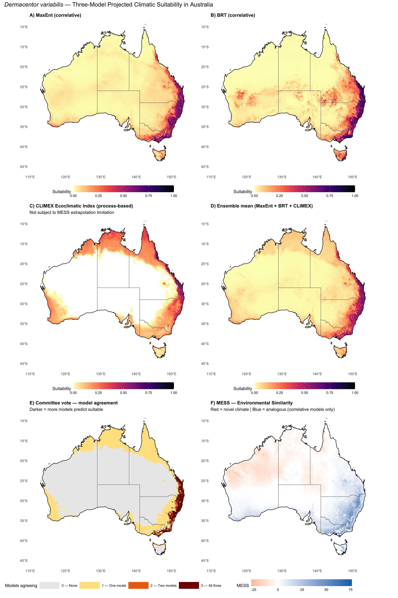

library(tidyverse)
library(terra)
library(sf)
library(dismo)
library(gbm)
library(rnaturalearth)
library(rnaturalearthdata)
library(predicts)
library(viridis)Step 7: Projection to Australia
Dermacentor variabilis Species Distribution Model
Overview
This script projects the fitted MaxEnt and BRT models to Australia to assess climatic suitability for D. variabilis, and combines them with the CLIMEX Ecoclimatic Index (EI) into a three-model ensemble. Critical steps include:
- Predict suitability within the native range (validation)
- MESS analysis — identify where Australian climate is novel relative to training data
- Project both correlative models (MaxEnt, BRT) to Australia
- Load CLIMEX EI predictions (process-based model, not subject to MESS limitations)
- Build three-model ensemble: continuous weighted mean + committee vote (0–3 agreement)
- Create binary suitability maps using selected thresholds
- Calculate area of suitable habitat in Australia
Why include CLIMEX in the ensemble? MaxEnt and BRT are correlative models that interpolate within the climate space of the training data. Tropical north QLD (and similar regions) may fall outside that training space (MESS < 0), causing these models to underpredict. CLIMEX is a mechanistic/process-based model using physiological parameters (stress indices, growth indices) that can operate beyond the training envelope. Combining all three improves spatial coverage and reduces model-specific bias.
1. Load models and data
base_dir <- "~/Library/CloudStorage/OneDrive-CSIRO/OneDrive - Docs/01_Projects/SDM/Dvariabilis_SDM"
processed_dir <- file.path(base_dir, "processed_data")
figures_dir <- file.path(base_dir, "figures")
# Models
maxent_model <- readRDS(file.path(processed_dir, "selected_maxent_model.rds"))
brt_model <- readRDS(file.path(processed_dir, "brt_model.rds"))
thresholds <- readRDS(file.path(processed_dir, "model_thresholds.rds"))
selected_vars <- readLines(file.path(processed_dir, "selected_variables.txt"))
# Environmental stacks
env_M <- rast(file.path(processed_dir, "env_selected_M.tif"))
env_aus <- rast(file.path(processed_dir, "env_selected_aus.tif"))
# Occurrence and background data
occ_env <- readRDS(file.path(processed_dir, "occurrences_with_env.rds"))
bg_env <- readRDS(file.path(processed_dir, "background_with_env.rds"))
# Australia boundary
aus <- ne_countries(country = "Australia", scale = "medium", returnclass = "sf")
sprintf("Environmental layers — M: %d vars, %d x %d | Australia: %d vars, %d x %d",
nlyr(env_M), nrow(env_M), ncol(env_M),
nlyr(env_aus), nrow(env_aus), ncol(env_aus))[1] "Environmental layers — M: 5 vars, 935 x 1385 | Australia: 5 vars, 1073 x 1105"2. Predict within native range (validation)
cat("Predicting MaxEnt suitability within native range...\n")
pred_M_maxent <- terra::predict(env_M, maxent_model, type = "cloglog")
names(pred_M_maxent) <- "maxent_suitability"
cat("Predicting BRT suitability within native range...\n")
pred_M_brt <- predict(env_M, brt_model, n.trees = brt_model$n.trees,
type = "response")
names(pred_M_brt) <- "brt_suitability"
sprintf("Native range prediction complete")Predicting MaxEnt suitability within native range...
Predicting BRT suitability within native range...
[1] "Native range prediction complete"3. MESS analysis — Multivariate Environmental Similarity Surface
MESS identifies areas in Australia where climate conditions fall outside the range of the training data. MESS < 0 indicates novel (extrapolated) conditions.
# Reference data: environmental values at training points (presence + background)
ref_data <- bind_rows(
occ_env %>% dplyr::select(all_of(selected_vars)),
bg_env %>% dplyr::select(all_of(selected_vars))
)
# Calculate MESS for Australia
mess_aus <- mess(env_aus, as.data.frame(ref_data))
names(mess_aus) <- "mess"
# Summary statistics
mess_vals <- values(mess_aus, na.rm = TRUE)
n_novel <- sum(mess_vals < 0)
n_total <- length(mess_vals)
pct_novel <- round(100 * n_novel / n_total, 1)
sprintf("MESS Analysis for Australia:")
sprintf(" Total cells: %d", n_total)
sprintf(" Novel climate (MESS < 0): %d (%.1f%%)", n_novel, pct_novel)
sprintf(" Analogous climate (MESS >= 0): %d (%.1f%%)", n_total - n_novel, 100 - pct_novel)
sprintf(" MESS range: %.1f to %.1f", min(mess_vals), max(mess_vals))[1] "MESS Analysis for Australia:"
[1] " Total cells: 403351"
[1] " Novel climate (MESS < 0): 170301 (42.2%)"
[1] " Analogous climate (MESS >= 0): 233050 (57.8%)"
[1] " MESS range: -27.5 to 76.2"4. Identify most dissimilar variable (MoD)
For cells with MESS < 0, identify which variable is most responsible for the novelty.
# Calculate per-variable similarity
var_similarity <- list()
for (v in selected_vars) {
ref_range <- range(ref_data[[v]], na.rm = TRUE)
var_layer <- env_aus[[v]]
# Similarity: proportion of reference values smaller (0-100 scale)
# Negative = below reference range, >100 = above reference range
ref_sorted <- sort(ref_data[[v]])
n_ref <- length(ref_sorted)
sim <- app(var_layer, function(x) {
vapply(x, function(xi) {
if (is.na(xi)) return(NA_real_)
if (xi < ref_range[1]) return(100 * (xi - ref_range[1]) / (ref_range[2] - ref_range[1]))
if (xi > ref_range[2]) return(100 * (ref_range[2] - xi) / (ref_range[2] - ref_range[1]))
p <- sum(ref_sorted <= xi) / n_ref
min(p, 1 - p) * 200
}, numeric(1))
})
var_similarity[[v]] <- sim
}
var_sim_stack <- rast(var_similarity)
names(var_sim_stack) <- selected_vars
# Most dissimilar variable (minimum similarity at each cell)
mod_layer <- which.min(var_sim_stack)
names(mod_layer) <- "most_dissimilar_var"
sprintf("Most dissimilar variable analysis complete")[1] "Most dissimilar variable analysis complete"5. Project to Australia
cat("Projecting MaxEnt to Australia...\n")
pred_aus_maxent <- terra::predict(env_aus, maxent_model, type = "cloglog", clamp = TRUE)
names(pred_aus_maxent) <- "maxent_suitability"
cat("Projecting BRT to Australia...\n")
pred_aus_brt <- terra::predict(env_aus, brt_model, n.trees = brt_model$n.trees,
type = "response", na.rm = TRUE)
names(pred_aus_brt) <- "brt_suitability"
sprintf("Correlative model projection complete")Projecting MaxEnt to Australia...
Projecting BRT to Australia...
[1] "Correlative model projection complete"6. Load CLIMEX predictions and build three-model ensemble
CLIMEX EI (Ecoclimatic Index) is a process-based model output on a 0–100 scale. We normalise to 0–1 by dividing by 100, then resample to match the correlative model raster grid before combining.
# Load CLIMEX outputs
climex_EI_raw <- rast(file.path(processed_dir, "climex_EI_aus.tif"))
climex_binary <- rast(file.path(processed_dir, "climex_suitable_aus.tif"))
# Normalise EI to 0–1 (CLIMEX uses 0–100 scale)
climex_EI_norm <- climex_EI_raw / 100
names(climex_EI_norm) <- "climex_suitability"
# Resample CLIMEX to match MaxEnt/BRT grid (bilinear for continuous, near for binary)
climex_EI_rs <- resample(climex_EI_norm, pred_aus_maxent, method = "bilinear")
climex_bin_rs <- resample(climex_binary, pred_aus_maxent, method = "near")
names(climex_EI_rs) <- "climex_suitability"
names(climex_bin_rs) <- "climex_binary"
cat("CLIMEX EI range (normalised, resampled):\n")
print(global(climex_EI_rs, fun = "range", na.rm = TRUE))
# ---- Continuous three-model ensemble (data-driven skill-above-random AUC weights) ----
# Weights computed in 06_model_evaluation.qmd from spatial block CV AUC skill
# and CLIMEX WorldClim-bridge AUC. All inputs are on the same 0–1 scale.
ensemble_weights <- tryCatch(
readRDS(file.path(processed_dir, "ensemble_weights.rds")),
error = function(e) {
warning("ensemble_weights.rds not found — falling back to equal weights. Run 06_model_evaluation.qmd first.")
c(MaxEnt = 1/3, BRT = 1/3, CLIMEX = 1/3)
}
)
cat(sprintf(
"Ensemble weights: MaxEnt=%.3f, BRT=%.3f, CLIMEX=%.3f (sum=%.3f)\n",
ensemble_weights["MaxEnt"], ensemble_weights["BRT"],
ensemble_weights["CLIMEX"], sum(ensemble_weights)
))
pred_aus_ensemble <- (
ensemble_weights["MaxEnt"] * pred_aus_maxent +
ensemble_weights["BRT"] * pred_aus_brt +
ensemble_weights["CLIMEX"] * climex_EI_rs
)
names(pred_aus_ensemble) <- "ensemble_suitability"
# ---- Committee vote (0, 1, 2, or 3 models agree) ----
# Each model casts a binary vote using its MaxSS threshold
maxent_thresh_val <- thresholds$maxent$maxss
brt_thresh_val <- thresholds$brt$maxss
climex_thresh <- 0.10 # EI > 10 (= 0.1 normalised) = potentially suitable in CLIMEX
maxent_vote <- ifel(pred_aus_maxent >= maxent_thresh_val, 1, 0)
brt_vote <- ifel(pred_aus_brt >= brt_thresh_val, 1, 0)
climex_vote <- ifel(climex_EI_rs >= climex_thresh, 1, 0)
committee_vote <- maxent_vote + brt_vote + climex_vote
names(committee_vote) <- "models_agreeing"
# Summary
cat("--- Three-model ensemble summary ---\n")
cat("Continuous ensemble (equal-weight mean):\n")
print(global(pred_aus_ensemble, fun = c("min", "max", "mean"), na.rm = TRUE))
cat("\nCommittee vote distribution (N cells):\n")
vote_counts <- table(values(committee_vote))
print(vote_counts)
vote_pct <- round(100 * vote_counts / sum(!is.na(values(committee_vote))), 1)
cat("As % of land cells:\n")
print(vote_pct)CLIMEX EI range (normalised, resampled):
min max
climex_suitability 0 0.7886009
Ensemble weights: MaxEnt=0.541, BRT=0.152, CLIMEX=0.307 (sum=1.000)
--- Three-model ensemble summary ---
Continuous ensemble (equal-weight mean):
min max mean
ensemble_suitability 0.002949314 0.6347814 0.06575797
Committee vote distribution (N cells):
0 1 2 3
299235 90336 3055 10336
As % of land cells:
0 1 2 3
74.3 22.4 0.8 2.6 6b. Binary suitability maps
Apply thresholds to create presence/absence maps.
# Individual model binary maps (thresholds already computed in section 6)
maxent_binary <- pred_aus_maxent >= maxent_thresh_val
brt_binary <- pred_aus_brt >= brt_thresh_val
climex_binary_map <- climex_bin_rs # already binary from CLIMEX
names(maxent_binary) <- "maxent_binary"
names(brt_binary) <- "brt_binary"
names(climex_binary_map) <- "climex_binary"
# Ensemble binary: suitable where ≥ 2 of 3 models agree
ensemble_binary <- ifel(committee_vote >= 2, 1, 0)
names(ensemble_binary) <- "ensemble_binary"
# Conservative ensemble: all 3 models agree
ensemble_strict <- ifel(committee_vote == 3, 1, 0)
names(ensemble_strict) <- "ensemble_strict"
sprintf("Binary maps created (MaxEnt threshold: %.3f, BRT threshold: %.3f, CLIMEX threshold: %.2f)",
maxent_thresh_val, brt_thresh_val, climex_thresh)
sprintf("Ensemble: suitable where ≥2/3 models agree. Strict: all 3 agree.")[1] "Binary maps created (MaxEnt threshold: 0.499, BRT threshold: 0.521, CLIMEX threshold: 0.10)"
[1] "Ensemble: suitable where ≥2/3 models agree. Strict: all 3 agree."7. MESS-masked binary maps
Mask areas with novel climate (MESS < 0) in the binary predictions.
mess_mask <- mess_aus >= 0 # TRUE where climate is analogous
maxent_binary_masked <- maxent_binary * mess_mask
brt_binary_masked <- brt_binary * mess_mask
ensemble_binary_masked <- ensemble_binary * mess_mask
# Note: CLIMEX is process-based and does NOT require MESS masking —
# it is valid in novel climate zones by design. Only apply MESS to
# the correlative model predictions.
maxent_binary_masked[mess_mask == 0] <- NA
brt_binary_masked[mess_mask == 0] <- NA
ensemble_binary_masked[mess_mask == 0] <- NA
# Committee vote with MESS annotation
# Cells where CLIMEX predicts suitable but correlative models are in novel space
# represent the highest-value CLIMEX-only predictions
climex_only_novel <- ifel(
climex_binary_map == 1 & mess_mask == 0 &
(maxent_vote + brt_vote) == 0,
1, 0
)
names(climex_only_novel) <- "climex_only_novel_climate"
n_climex_novel <- sum(values(climex_only_novel) == 1, na.rm = TRUE)
sprintf("Cells predicted suitable by CLIMEX only AND in novel climate zone: %d", n_climex_novel)
sprintf("MESS-masked binary maps created (%.1f%% of cells masked as novel climate)", pct_novel)[1] "Cells predicted suitable by CLIMEX only AND in novel climate zone: 0"
[1] "MESS-masked binary maps created (42.2% of cells masked as novel climate)"8. Calculate suitable habitat area
# Use terra::cellSize for accurate area calculation
cell_areas <- cellSize(maxent_binary, unit = "km")
calc_area <- function(binary_r, areas = cell_areas) {
sum(values(areas * ifel(binary_r == 1, 1, 0)), na.rm = TRUE)
}
aus_total_area <- sum(values(cell_areas * !is.na(pred_aus_maxent)), na.rm = TRUE)
maxent_suitable_area <- calc_area(maxent_binary)
maxent_suitable_area_masked <- calc_area(ifel(!is.na(maxent_binary_masked) & maxent_binary_masked == 1, 1, 0))
brt_suitable_area <- calc_area(brt_binary)
brt_suitable_area_masked <- calc_area(ifel(!is.na(brt_binary_masked) & brt_binary_masked == 1, 1, 0))
climex_suitable_area <- calc_area(climex_binary_map)
ensemble_suitable_area <- calc_area(ensemble_binary)
ensemble_strict_area <- calc_area(ensemble_strict)
# Area by committee vote level
area_1plus <- calc_area(ifel(committee_vote >= 1, 1, 0))
area_2plus <- calc_area(ifel(committee_vote >= 2, 1, 0))
area_3 <- calc_area(ifel(committee_vote == 3, 1, 0))
cat("--- Suitable Habitat Area in Australia ---\n")
sprintf("Total land area: %.0f km2", aus_total_area)
sprintf("")
sprintf("MaxEnt — Suitable: %.0f km2 (%.1f%%)",
maxent_suitable_area, 100 * maxent_suitable_area / aus_total_area)
sprintf("MaxEnt — Suitable (MESS-masked, correlative only): %.0f km2 (%.1f%%)",
maxent_suitable_area_masked, 100 * maxent_suitable_area_masked / aus_total_area)
sprintf("")
sprintf("BRT — Suitable: %.0f km2 (%.1f%%)",
brt_suitable_area, 100 * brt_suitable_area / aus_total_area)
sprintf("BRT — Suitable (MESS-masked): %.0f km2 (%.1f%%)",
brt_suitable_area_masked, 100 * brt_suitable_area_masked / aus_total_area)
sprintf("")
sprintf("CLIMEX — Suitable (EI > 10): %.0f km2 (%.1f%%)",
climex_suitable_area, 100 * climex_suitable_area / aus_total_area)
sprintf("")
sprintf("--- Three-model Ensemble ---")
sprintf("≥1 model agrees suitable: %.0f km2 (%.1f%%)",
area_1plus, 100 * area_1plus / aus_total_area)
sprintf("≥2 models agree suitable: %.0f km2 (%.1f%%) [recommended threshold]",
area_2plus, 100 * area_2plus / aus_total_area)
sprintf("All 3 models agree suitable: %.0f km2 (%.1f%%) [conservative]",
area_3, 100 * area_3 / aus_total_area)--- Suitable Habitat Area in Australia ---
[1] "Total land area: 7731371 km2"
[1] ""
[1] "MaxEnt — Suitable: 217704 km2 (2.8%)"
[1] "MaxEnt — Suitable (MESS-masked, correlative only): 217704 km2 (2.8%)"
[1] ""
[1] "BRT — Suitable: 223710 km2 (2.9%)"
[1] "BRT — Suitable (MESS-masked): 223614 km2 (2.9%)"
[1] ""
[1] "CLIMEX — Suitable (EI > 10): 243962 km2 (3.2%)"
[1] ""
[1] "--- Three-model Ensemble ---"
[1] "≥1 model agrees suitable: 1994660 km2 (25.8%)"
[1] "≥2 models agree suitable: 244105 km2 (3.2%) [recommended threshold]"
[1] "All 3 models agree suitable: 189133 km2 (2.4%) [conservative]"9. Visualisation — Australia suitability maps
aus_sf <- ne_countries(
country = "Australia",
scale = "medium",
returnclass = "sf"
)
states <- ne_states(country = "Australia", returnclass = "sf")
# Convert rasters to data frames for ggplot
maxent_df <- as.data.frame(pred_aus_maxent, xy = TRUE) %>%
filter(!is.na(maxent_suitability))
brt_df <- as.data.frame(pred_aus_brt, xy = TRUE) %>%
filter(!is.na(brt_suitability))
climex_df <- as.data.frame(climex_EI_rs, xy = TRUE) %>%
filter(!is.na(climex_suitability))
ensemble_df <- as.data.frame(pred_aus_ensemble, xy = TRUE) %>%
filter(!is.na(ensemble_suitability))
mess_df <- as.data.frame(mess_aus, xy = TRUE) %>% filter(!is.na(mess))
vote_df <- as.data.frame(committee_vote, xy = TRUE) %>%
filter(!is.na(models_agreeing)) %>%
mutate(
models_agreeing = factor(
models_agreeing,
levels = 0:3,
labels = c("0 — None", "1 — One model", "2 — Two models", "3 — All three")
)
)
# Common theme
map_theme <- theme_minimal(base_size = 11) +
theme(
panel.grid = element_blank(),
plot.title = element_text(size = 12, face = "bold"),
legend.position = "bottom",
legend.key.width = unit(1.8, "cm"),
axis.title.x = element_blank(),
axis.title.y = element_blank()
)
# A) MaxEnt
p1 <- ggplot() +
geom_raster(data = maxent_df, aes(x = x, y = y, fill = maxent_suitability)) +
geom_sf(data = states, fill = NA, colour = "grey40", linewidth = 0.3) +
geom_sf(data = aus_sf, fill = NA, colour = "black", linewidth = 0.5) +
scale_fill_gradientn(
colours = c("white", magma(256, direction = -1)),
limits = c(0, 1),
name = "Suitability"
) +
labs(title = "A) MaxEnt (correlative)") +
coord_sf(xlim = c(112, 155), ylim = c(-45, -10)) +
map_theme
# B) BRT
p2 <- ggplot() +
geom_raster(data = brt_df, aes(x = x, y = y, fill = brt_suitability)) +
geom_sf(data = states, fill = NA, colour = "grey40", linewidth = 0.3) +
geom_sf(data = aus_sf, fill = NA, colour = "black", linewidth = 0.5) +
scale_fill_gradientn(
colours = c("white", magma(256, direction = -1)),
limits = c(0, 1),
name = "Suitability"
) +
labs(title = "B) BRT (correlative)") +
coord_sf(xlim = c(112, 155), ylim = c(-45, -10)) +
map_theme
# C) CLIMEX EI
p3 <- ggplot() +
geom_raster(data = climex_df, aes(x = x, y = y, fill = climex_suitability)) +
geom_sf(data = states, fill = NA, colour = "grey40", linewidth = 0.3) +
geom_sf(data = aus_sf, fill = NA, colour = "black", linewidth = 0.5) +
scale_fill_gradientn(
colours = c("white", magma(256, direction = -1)),
limits = c(0, 1),
name = "Suitability"
) +
labs(
title = "C) CLIMEX Ecoclimatic Index (process-based)",
subtitle = "Not subject to MESS extrapolation limitation"
) +
coord_sf(xlim = c(112, 155), ylim = c(-45, -10)) +
map_theme
# D) Continuous ensemble (equal-weight mean of all three)
p4 <- ggplot() +
geom_raster(
data = ensemble_df,
aes(x = x, y = y, fill = ensemble_suitability)
) +
geom_sf(data = states, fill = NA, colour = "grey40", linewidth = 0.3) +
geom_sf(data = aus_sf, fill = NA, colour = "black", linewidth = 0.5) +
scale_fill_gradientn(
colours = c("white", magma(256, direction = -1)),
limits = c(0, 1),
name = "Suitability"
) +
labs(title = "D) Ensemble mean (MaxEnt + BRT + CLIMEX)") +
coord_sf(xlim = c(112, 155), ylim = c(-45, -10)) +
map_theme
# E) Committee vote
p5 <- ggplot() +
geom_raster(data = vote_df, aes(x = x, y = y, fill = models_agreeing)) +
geom_sf(data = states, fill = NA, colour = "grey40", linewidth = 0.3) +
geom_sf(data = aus_sf, fill = NA, colour = "black", linewidth = 0.5) +
scale_fill_manual(
values = c(
"0 — None" = "grey92",
"1 — One model" = "#FEE391",
"2 — Two models" = "#EC7014",
"3 — All three" = "#7F0000"
),
name = "Models agreeing"
) +
labs(
title = "E) Committee vote — model agreement",
subtitle = "Darker = more models predict suitable"
) +
coord_sf(xlim = c(112, 155), ylim = c(-45, -10)) +
map_theme
# F) MESS map
p6 <- ggplot() +
geom_raster(data = mess_df, aes(x = x, y = y, fill = mess)) +
geom_sf(data = states, fill = NA, colour = "grey40", linewidth = 0.3) +
geom_sf(data = aus_sf, fill = NA, colour = "black", linewidth = 0.5) +
scale_fill_gradient2(
low = "#D55E00",
mid = "white",
high = "#0072B2",
midpoint = 0,
name = "MESS"
) +
labs(
title = "F) MESS — Environmental Similarity",
subtitle = "Red = novel climate | Blue = analogous (correlative models only)"
) +
coord_sf(xlim = c(112, 155), ylim = c(-45, -10)) +
map_theme
library(patchwork)
combined_plot <- (p1 + p2) / (p3 + p4) / (p5 + p6)
combined_plot +
plot_annotation(
title = expression(
italic("Dermacentor variabilis") ~
"— Three-Model Projected Climatic Suitability in Australia"
),
theme = theme(plot.title = element_text(size = 15, face = "bold"))
)
ggsave(
file.path(figures_dir, "07_australia_projection.png"),
width = 14,
height = 21,
dpi = 300
)10. Save outputs
# Continuous predictions (individual models)
writeRaster(pred_aus_maxent, file.path(processed_dir, "pred_aus_maxent.tif"), overwrite = TRUE)
writeRaster(pred_aus_brt, file.path(processed_dir, "pred_aus_brt.tif"), overwrite = TRUE)
writeRaster(climex_EI_rs, file.path(processed_dir, "climex_EI_norm_aus.tif"), overwrite = TRUE)
# Three-model ensemble
writeRaster(pred_aus_ensemble, file.path(processed_dir, "pred_aus_ensemble.tif"), overwrite = TRUE)
writeRaster(committee_vote, file.path(processed_dir, "committee_vote_aus.tif"), overwrite = TRUE)
# Binary predictions
writeRaster(maxent_binary, file.path(processed_dir, "pred_aus_maxent_binary.tif"), overwrite = TRUE)
writeRaster(brt_binary, file.path(processed_dir, "pred_aus_brt_binary.tif"), overwrite = TRUE)
writeRaster(ensemble_binary, file.path(processed_dir, "pred_aus_ensemble_binary.tif"), overwrite = TRUE)
writeRaster(ensemble_strict, file.path(processed_dir, "pred_aus_ensemble_strict.tif"), overwrite = TRUE)
writeRaster(climex_only_novel, file.path(processed_dir, "climex_only_novel_aus.tif"), overwrite = TRUE)
# MESS
writeRaster(mess_aus, file.path(processed_dir, "mess_australia.tif"), overwrite = TRUE)
# Native range predictions
writeRaster(pred_M_maxent, file.path(processed_dir, "pred_M_maxent.tif"), overwrite = TRUE)
writeRaster(pred_M_brt, file.path(processed_dir, "pred_M_brt.tif"), overwrite = TRUE)
# Area summary (comprehensive)
area_summary <- tibble(
model = c(
"MaxEnt (correlative)",
"MaxEnt (MESS-masked)",
"BRT (correlative)",
"BRT (MESS-masked)",
"CLIMEX (EI > 10, process-based)",
"Ensemble ≥1 model",
"Ensemble ≥2 models (recommended)",
"Ensemble = 3 models (conservative)"
),
suitable_area_km2 = round(c(
maxent_suitable_area, maxent_suitable_area_masked,
brt_suitable_area, brt_suitable_area_masked,
climex_suitable_area,
area_1plus, area_2plus, area_3
), 0),
pct_australia = round(c(
maxent_suitable_area, maxent_suitable_area_masked,
brt_suitable_area, brt_suitable_area_masked,
climex_suitable_area,
area_1plus, area_2plus, area_3
) / aus_total_area * 100, 1)
)
write_csv(area_summary, file.path(processed_dir, "suitable_area_summary.csv"))
cat("Area summary:\n")
print(area_summary, n = Inf)
sprintf("Saved all projection outputs, three-model ensemble, and area summaries")Area summary:
# A tibble: 8 × 3
model suitable_area_km2 pct_australia
<chr> <dbl> <dbl>
1 MaxEnt (correlative) 217704 2.8
2 MaxEnt (MESS-masked) 217704 2.8
3 BRT (correlative) 223710 2.9
4 BRT (MESS-masked) 223614 2.9
5 CLIMEX (EI > 10, process-based) 243962 3.2
6 Ensemble ≥1 model 1994660 25.8
7 Ensemble ≥2 models (recommended) 244105 3.2
8 Ensemble = 3 models (conservative) 189133 2.4
[1] "Saved all projection outputs, three-model ensemble, and area summaries"